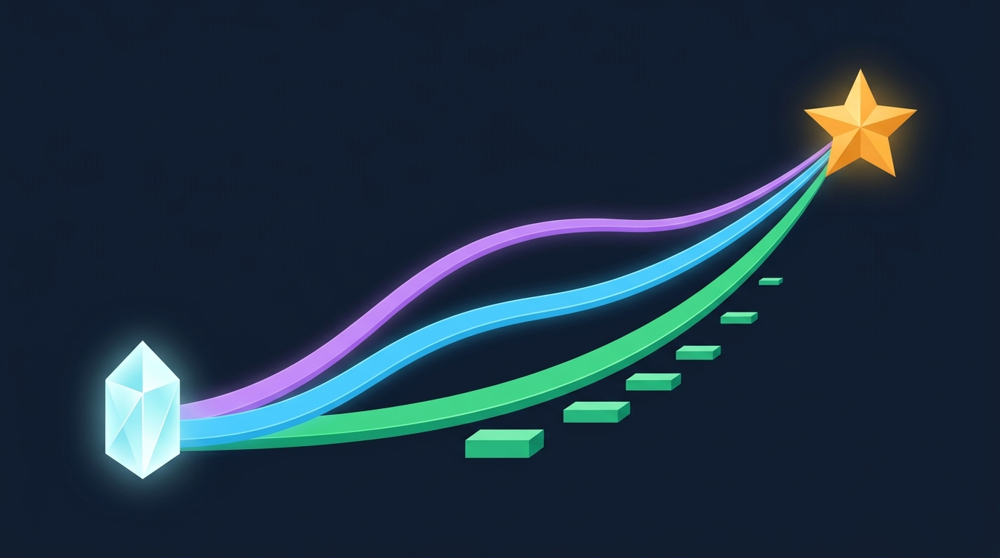

Progettare Verifiche UDL Multilivello con Gemini
Modelli di Ragionamento (Thinking), Multimodalità, Canvas, Gem e Scala LOTS → HOTS

🎯 Obiettivi Operativi di Oggi
- Passare dal prompt ingenuo al Prompt di Verifica
R-C-N-A-F. - Governare Gemini Thinking lungo la scala LOTS → HOTS integrando la "Caccia all'errore".
- Eseguire la Radiografia di una verifica reale con Gemini Multimodale (Fase 2A).
- Co-progettare in Gemini Canvas una Verifica UDL a 3 Livelli e creare il tuo Gem disciplinare (Fase 2B).
⏱️ Scansione delle 4 Ore
| Orario | Attività |
|---|---|
00:00 – 01:50 | 🟢 Blocco 1 (110') · Bias mnemonico, LOTS → HOTS, Thinking, Prove equipollenti e Lavoro 2 · Fase 2A (30') |
01:50 – 02:10 | ☕ PAUSA CENTRALE (20 min) |
02:10 – 04:00 | 🔵 Blocco 2 (110') · Gemini Canvas 3 Livelli, creazione Gem, Lavoro 2 · Fase 2B (55') e Validazione critica (25') |
Perché i Prompt Generici Producono Verifiche Inique?
❌ Prompt Ingenuo
"Creami una verifica sul Teorema di Pitagora / sul Feudalesimo per la scuola media, e fai anche una versione facilitata per DSA."
- 70–80% di domande solo mnemoniche (
LOTS 1 — Ricordare). - Versione "DSA" al ribasso: l'IA cancella i problemi di ragionamento invece di aggiungere supporti!
- Barriere nascoste: doppie negazioni ("Quale NON è..."), subordinate lunghe e consegne accorpate.
✅ Prompt Ingegnerizzato (R-C-N-A-F)
Istruiamo Gemini con vincoli pedagogici e docimologici espliciti:
- Bilanciamento cognitivo: ~40% LOTS · ~40% Ponte · ~20% HOTS.
- Accessibilità senza sconti cognitivi: banca parole, tabelle semicompilate, numeri interi, sentence starters.
- 3 Versioni parallele (A Facilitata, B Standard, C Potenziamento) + Correttorio codificato
[A-D][1-6].
La Ricetta di Bilanciamento per una Verifica Inclusiva (45–50 min)
| Quota | Livelli Anderson & Krathwohl | Asse KSM | Ruolo nella Verifica Inclusiva (Versione A con Scaffolding) |
|---|---|---|---|
| ~40% | LOTS: 1. Ricordare · 2. Comprendere [A1, B2] |
K — Knowledge | Rampa di accesso iniziale che riduce l'ansia e verifica i concetti essenziali (banca parole, mappe, righe numerate). |
| ~40% | Ponte: 3. Applicare · 4. Analizzare [C3, B4] |
S — Skills | Applicazione di procedure a casi concreti o confronto in tabella (passi numerati Passo 1/2 e tabelle semicompilate). |
| ~20% | HOTS: 5. Valutare · 6. Creare [B5, C5, D4, B6] |
M — Mindset & Metacognition | Pensiero critico per tutti tramite "Caccia all'errore" + sentence starters (frasi-avvio guidate). |
Quando Attivare il Modello di Ragionamento (Thinking)
⚡ Modello Rapido (Flash)
Risponde di getto in pochi secondi. Ideale per l'Incontro 1:
- Adattare un testo in Easy-to-Read;
- Creare glossari o elenchi di parole chiave;
- Riformulare una singola consegna.
🧠 Modello di Ragionamento (Thinking)
Esegue una catena di pensiero interna prima di rispondere. Indispensabile oggi per:
- Verificare calcoli e terne pitagoriche intere (Esempio #08 ↗);
- Mantenere il parallelismo di 6 quesiti su 3 versioni UDL;
- Progettare errori davvero realistici per la "Caccia all'errore".
Il Superpotere Inclusivo: la "Caccia all'Errore" (Error Analysis)
Presentare lo svolgimento di uno studente immaginario con 1 errore concettuale o procedurale abbatte il blocco del foglio bianco, rimuove lo stigma dell'errore e attiva il pensiero critico di tutti!
c = √(10² + 6²) = 11,66 cm📘 Esempio #04 — Italiano Grammatica ↗
"Il Detective Grammaticale": 3 frasi già analizzate con 1 errore di complemento ciascuna da scovare e correggere.
📐 Esempio #08 — Matematica Pitagora ↗
Uno studente somma i quadrati invece di sottrarli per trovare un cateto: "Perché geometricamente è impossibile?"
🏛️ Esempio #14 — Storia Feudalesimo ↗
"Lo Storico Cerca l'Anacronismo": contadini dell'Anno Mille che mangiano patate e pomodori!
⚙️ Esempio #22 — Tecnologia Energia ↗
"Caccia al guasto tecnico": pannelli fotovoltaici installati su una parete esposta a Nord in ombra.
Prove Equipollenti vs Prove Differenziate nei Prompt di Gemini
⚖️ Prova Equipollente (Versione A — Facilitata)
Per DSA (PDP), BES/NAI e L. 104 curricolare:
- Stessi obiettivi della classe (piena validità del voto!).
- Cambiano i supporti: riduzione quantitativa degli esercizi ripetitivi, banca parole, box formulario, numeri interi, tabelle semicompilate e sentence starters.
🧩 Prova Differenziata (Personalizzata PEI)
Per disabilità L. 104/92 con obiettivi personalizzati nel PEI:
- Obiettivi tarati sui 3 nuclei essenziali concreti del PEI.
- Sintassi Soggetto-Verbo-Complemento, forte supporto visivo, esempi svolti e scelta guidata a 2–3 opzioni nettamente distinte.
01:20 – 01:50 · 30 Minuti)"Radiografia" di una Verifica Reale con Gemini Multimodale
Step 2A.1 (5'): carica una tua verifica tradizionale (oppure scegli una delle 4 prove pronte nel Kit Materiali Campione ↗). Step 2A.2 (15'): incolla il prompt qui sotto. Step 2A.3 (10'): confronta la diagnosi con il collega di banco.
☕ PAUSA CENTRALE — 20 Minuti
Pausa caffè e movimento!
Al rientro (02:10): Gemini Canvas per le 3 Versioni UDL, creazione del tuo Gem disciplinare e Fase 2B del Lavoro Pratico 2!
02:10 – 04:00) · Demo Live 1Co-Progettare 3 Versioni Parallele in Gemini Canvas
🟢 Versione A (Facilitata / Equipollente)
Consegne numerate step-by-step, zero doppie negazioni, banca parole per Q1–Q2, tabella semicompilata per Q3–Q4, sentence starters per la "Caccia all'errore" (Q5–Q6).
🔵 Versione B (Standard)
Stessi 6 quesiti e stessi nuclei fondanti con consegne chiare ad alta leggibilità, ma senza i suggerimenti e le tabelle precompilate.
🟣 Versione C (Potenziamento)
Sostituisce il quesito finale con una sfida aperta di livello HOTS 6 — Creare o un collegamento interdisciplinare inedito.
✍️ Potenza di Gemini Canvas: evidenzia col mouse un singolo quesito e chiedi "Accorcia la consegna" o "Metti numeri interi" senza rigenerare tutta la verifica. Al termine: 1 clic su "Esporta in Documenti"!
Crea il tuo "Gem" Progettista di Verifiche UDL
⚙️ Come crearlo in Google Gemini
- Nel menu laterale sinistro di Gemini clicca su Gestore dei Gem → Nuovo Gem.
- Dai un nome chiaro:
Progettista Verifiche UDL — [La mia Materia]. - Incolla nel campo Istruzioni la struttura fissa del Prompt Template 2 (regola 40/40/20 LOTS→HOTS, 3 versioni UDL, Caccia all'errore, codici
[A-D][1-6]). - Clicca su Salva!
🚀 Come lo userai tutto l'anno scolastico
Non dovrai più riscrivere il prompt lungo! Ti basterà aprire il tuo Gem e scrivere solo:
6 Modelli Pronti per il Laboratorio dell'Incontro 2
📘 #03 Italiano (3ª) ↗
Verifica narrativa UDL a 3 livelli con righe numerate, Caccia all'errore interpretativo e sentence starters.
📘 #04 Italiano Gramm. (2ª) ↗
Analisi logica inclusiva con Box Bussola, sintagmi segmentati e "Il Detective Grammaticale".
📐 #08 Matematica (2ª) ↗
Teorema di Pitagora con Gemini Thinking, terne pitagoriche intere e "Caccia all'errore matematico".
🏛️ #14 Storia (1ª) ↗
Società feudale LOTS → HOTS con linea del tempo compensativa e "Caccia all'anacronismo".
⚙️ #22 Tecnologia (3ª) ↗
Gemini Multimodale su schema centrale elettrica → 3 livelli + "Caccia al guasto tecnico".
🎨 #24 Arte e Imm. (2ª) ↗
Gemini Vision per lettura opera rinascimentale dalla descrizione (LOTS) alla rielaborazione UDL (HOTS).
Prompt Chaining: Mossa 1 (Versione B) → Mossa 2 (Versioni A e C)
02:40 – 03:35 (55 Minuti · 3 Micro-Step Progressivi)🛠️ LAVORO PRATICO 2 · FASE 2B: Verifica UDL a 3 Livelli & Gem
1️⃣ Step 2B.1 (20') · Versione B
Attiva Gemini Thinking + Canvas, lancia la Mossa 1 (Prompt 2B.1) sull'argomento del Giorno 1 e verifica subito calcoli, date e chiarezza della "Caccia all'errore".
2️⃣ Step 2B.2 (20') · Versioni A & C
Lancia la Mossa 2 (Prompt 2B.2) nella stessa chat, rifinisci 1–2 consegne col mouse in Canvas, clicca Esporta in Documenti (Lexend 12 pt, 1,5) e salva in 02_Incontro2_Verifica_UDL_Multilivello.
3️⃣ Step 2B.3 (15') · Gem (Approf.)
Apri Gestore dei Gem → Nuovo Gem e salva le regole fisse dei due prompt nel tuo assistente permanente Progettista Verifiche UDL - [Materia].
03:35 – 03:50 · 15 min)Controllo Critico (Human-in-the-Loop): I 4 Rischi da Intercettare
1️⃣ Allucinazioni e Calcoli
Ricalcola sempre manualmente i numeri dei problemi STEM e controlla date/citazioni nel correttorio generato da Gemini.
2️⃣ Taratura 11–14 Anni
Verifica che il registro lessicale non sia troppo accademico (da liceo/università) né eccessivamente infantile per la scuola media.
3️⃣ Ambiguità e Doppie Negazioni
Ogni consegna deve avere un solo verbo d'azione chiaro e nessuna domanda ambigua con due risposte plausibili.
4️⃣ Equità e Dignità Cognitiva
Assicurati che nella Versione A (Facilitata) siano stati tolti gli ostacoli strumentali, ma sia rimasto il ragionamento!
03:50 – 04:00) · Arrivederci all'Incontro 3!Checklist di Fine Giornata 2 & Anticipazione Incontro 3
✅ Verifica nella tua Cartella Google Drive
- ✔ Documento Google con la Verifica UDL a 3 Livelli + Correttorio
[A-D][1-6]salvato in02_Incontro2_Verifica_UDL_Multilivello. - ✔ Validazione critica (Human-in-the-Loop) completata.
- ✔ Gem disciplinare creato e salvato nel tuo account Gemini (Binario Approfondimento).
- 🔒 Ricorda di effettuare il LOGOUT dal browser del laboratorio!
🚀 Cosa faremo nell'Incontro 3 di 5 (4 ore)
VerifichIAmo con l'IA — Parte II (4h):
- Costruiremo con Gemini la Rubrica di Valutazione KSM × Anderson & Krathwohl (esportata in Google Fogli per le Griglie di Classroom);
- Tradurremo la rubrica nella Scheda di Autovalutazione Studente;
- Genereremo la Banca di Feedback Formativi (feed-forward) e le micro-schede di recupero mirato!